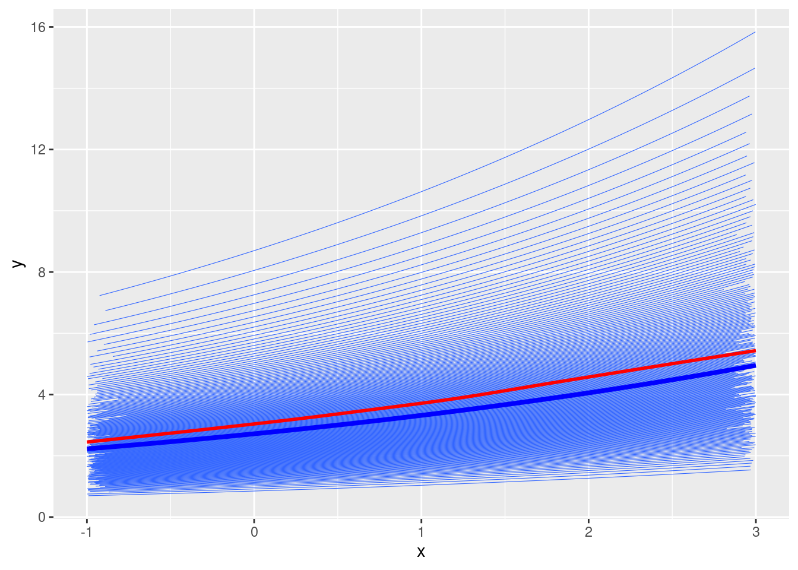
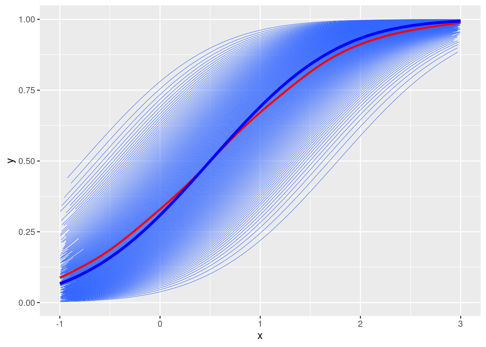
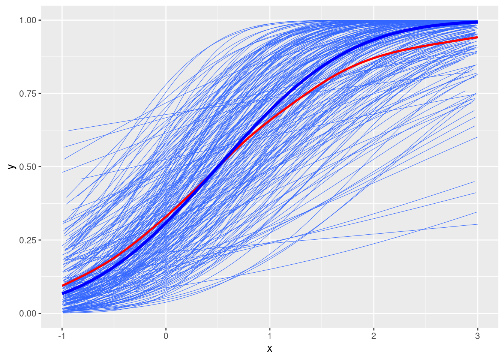
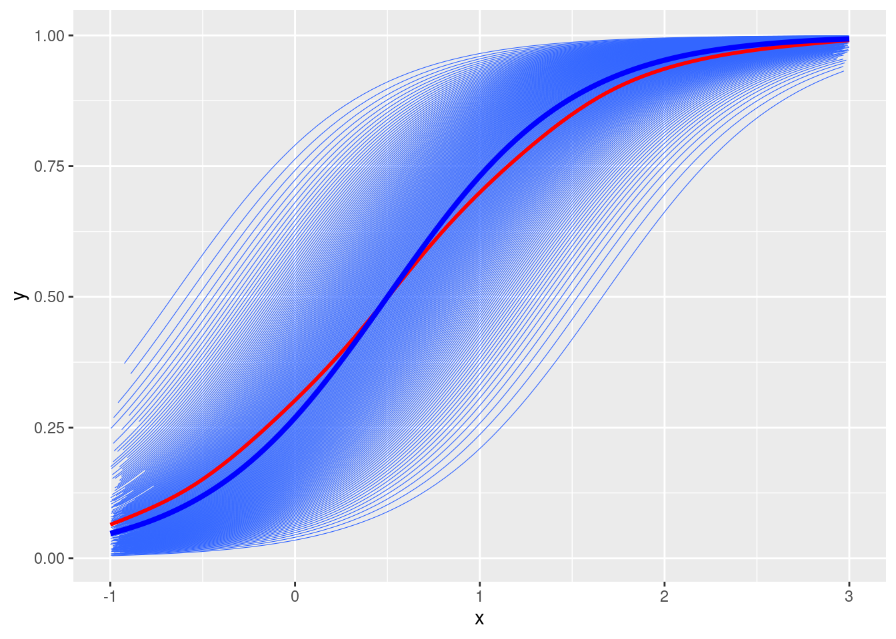
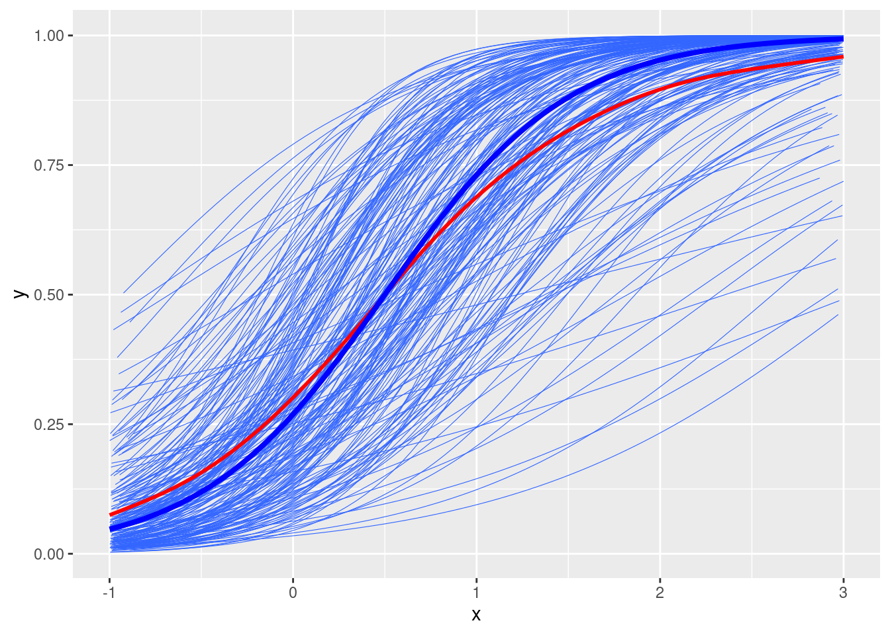

One thing that I always felt uncomfortable in multilevel modeling (MLM) is the concept of a unit-specific (US)/subject-specific model vs. a population-average (PA) model. I’ve come across it several times, but for some reason I haven’t really made an effort to fully understand it. I happened to come across this paper by Harring and Blozis, which I read before, and think that why not try to really understand the relationship between the coefficient estimates in a US model and in a PA model in the context of generalized linear mixed-effect model (GLMM). So I have this learning note.
Warning in checkMatrixPackageVersion(): Package version inconsistency detected.
TMB was built with Matrix version 1.5.4
Current Matrix version is 1.5.4.1
Please re-install 'TMB' from source using install.packages('TMB', type = 'source') or ask CRAN for a binary version of 'TMB' matching CRAN's 'Matrix' package
Warning in checkDepPackageVersion(dep_pkg = "TMB"): Package version inconsistency detected.
glmmTMB was built with TMB version 1.9.2
Current TMB version is 1.9.4
Please re-install glmmTMB from source or restore original 'TMB' package (see '?reinstalling' for more information)
library(geepack)
While MLM/GLMM is a US model, which models the associations between predictors and the outcome for each cluster, PA models are popular in some areas of research, with the popular method of the generalized estimating equation (GEE). Whereas the fixed effect coefficients in US are the same as the coefficients in PA in linear models, when it comes to generalized linear models with nonlinear link functions, the coefficients are not the same. This is because some of the generalized linear models typically assume constant variance on the latent continuous response variable. For example, in a single-level logistic model and a GEE model, the latent response \(Y^*\) has a variance of \(\pi^2 / 3\), but in a two-level model, the variance is \(\pi^2 / 3 + \tau^2_0\).1 Because the coefficients are in the unit of the latent response, it means that the coefficients are on different units for US vs. PA. But how are they different? I will explore four link functions: identity, log, probit, and logit. But first, some notations.
Model Notations
While in actual modeling, the distributional assumptions of the response variables are important (e.g., normal, Poisson), the comparison of US vs. PA mainly concerns the mean of the outcome and the link function. For all models, the random effects are normally distributed.
Conditional (US) Model
\[
\begin{aligned}
\mathop{\mathrm{E}}(y_{ij} | u_j) & = \mu_{ij} \\
h(\mu_{ij}) & = \boldsymbol{\mathbf{x}}^\top_{ij} \boldsymbol{\mathbf{\gamma }}+ \boldsymbol{\mathbf{z}}^\top_{ij} \boldsymbol{\mathbf{u}}_j
\end{aligned}
\] where \(h(\cdot)\) is the link function, \(\boldsymbol{\mathbf{x}}_{ij}\) and \(\boldsymbol{\mathbf{z}}_{ij}\) are the fixed and random covariates for the \(i\)th person in the \(j\)th cluster. The distributional assumption is \(\boldsymbol{\mathbf{u}}_j \sim N_q(\boldsymbol{\mathbf{0}}, \boldsymbol{\mathbf{G}})\)
Marginal (PA) Model
Now one is modeling the marginal mean:
\[
\begin{aligned}
\mathop{\mathrm{E}}(y_{ij}) & = \mathop{\mathrm{E}}[\mathop{\mathrm{E}}(y_{ij} | \mu_{ij})] = \mu^\text{PA}_{ij} \\
h(\mu^\text{PA}_{ij}) & = \boldsymbol{\mathbf{x}}^\top_{ij} \boldsymbol{\mathbf{\gamma^\text{PA}}}
\end{aligned}
\] The above two formulas can be used to find the transformation from the unit-specific coefficients, \(\boldsymbol{\mathbf{\gamma}}\), to the population-average coefficients, \(\boldsymbol{\mathbf{\gamma^\text{PA}}}\).
Identity Link
\[h(\mu^\text{PA}_{ij}) = \mu_{ij}\] From the US model \[
\begin{aligned}
\mathop{\mathrm{E}}(y_{ij}) & = \mathop{\mathrm{E}}[\mathop{\mathrm{E}}(y_{ij} | u_j)] = \mathop{\mathrm{E}}[\boldsymbol{\mathbf{x}}^\top_{ij} \boldsymbol{\mathbf{\gamma }}+ \boldsymbol{\mathbf{z}}^\top_{ij} \boldsymbol{\mathbf{u}}_j] \\
& = \boldsymbol{\mathbf{x}}^\top_{ij} \boldsymbol{\mathbf{\gamma}}
\end{aligned}
\] Compare to the PA model \[\mathop{\mathrm{E}}(y_{ij}) = \boldsymbol{\mathbf{x}}^\top_{ij} \boldsymbol{\mathbf{\gamma^\text{PA}}},\] we have \(\boldsymbol{\mathbf{\gamma }}= \boldsymbol{\mathbf{\gamma^\text{PA}}}\)
Plot
# Simulate predictor X ~ U(-2, 2), with ICC = 0num_obs <-2e4num_subjects <-200x <-runif(num_obs, min =-1, max =3)# Subject IDssubject_id <-rep(seq_len(num_subjects), each = num_obs / num_subjects)
# Fixed effectsgamma0 <--1gamma1 <-1# Random intercepts and tau2_u <-0.25# u <- rnorm(num_subjects, mean = 0, sd = sqrt(tau2_u))u <-qnorm(seq(0.01, 0.99, length.out = num_subjects), sd =sqrt(tau2_u))# Simulate mu_{ij}mu <- gamma0 + gamma1 * x + u[subject_id]# Plotdf <-tibble(y = mu, x = x, id = subject_id)ggplot(df, aes(x = x, y = y)) +geom_smooth(aes(group = id), se =FALSE, method ="lm", size =0.2) +geom_smooth(se =FALSE, col ="red") +stat_function(fun =function(x) gamma0 + gamma1 * x, col ="blue", size =1.4)
Warning: Using `size` aesthetic for lines was deprecated in ggplot2 3.4.0.
ℹ Please use `linewidth` instead.
`geom_smooth()` using formula = 'y ~ x'
`geom_smooth()` using method = 'gam' and formula = 'y ~ s(x, bs = "cs")'
The blue line represents the regression line when \(u_j = 0\), and the red line is the regression line for the population-average model. They are the same.
Compare NLME with GEE
# Unit-Specificm_us <-glmmTMB(mu ~ x + (x | id), data = df, family =gaussian(link ="identity"), dispformula =~0)# Population-Averagem_pa <-geeglm(mu ~ x, family =gaussian(link ="identity"),data = df, id = id, corstr ="exchangeable")# The coefficients are the samecbind(US =fixef(m_us)$cond, PA =coef(m_pa))
US PA
(Intercept) -0.9999857 -1
x 1.0000000 1
Log Link
The log link is commonly used in the Poisson model.
\[h(\mu^\text{PA}_{ij}) = \log(\mu_{ij})\] From the US model \[
\begin{aligned}
\mathop{\mathrm{E}}(y_{ij}) & = \mathop{\mathrm{E}}[\mathop{\mathrm{E}}(y_{ij} | u_j)] = \mathop{\mathrm{E}}[h^{-1}(\boldsymbol{\mathbf{x}}^\top_{ij} \boldsymbol{\mathbf{\gamma }}+ \boldsymbol{\mathbf{z}}^\top_{ij} \boldsymbol{\mathbf{u}}_j)] \\
& = \mathop{\mathrm{E}}[\exp(\boldsymbol{\mathbf{x}}^\top_{ij} \boldsymbol{\mathbf{\gamma }}+ \boldsymbol{\mathbf{z}}^\top_{ij} \boldsymbol{\mathbf{u}}_j)] \\
& = \exp(\boldsymbol{\mathbf{x}}^\top_{ij} \boldsymbol{\mathbf{\gamma}}) \mathop{\mathrm{E}}[\exp(\boldsymbol{\mathbf{z}}^\top_{ij} \boldsymbol{\mathbf{u}}_j))] \\
& = \exp(\boldsymbol{\mathbf{x}}^\top_{ij} \boldsymbol{\mathbf{\gamma}}) \exp[\boldsymbol{\mathbf{z}}\top_{ij} \boldsymbol{\mathbf{G}} \boldsymbol{\mathbf{z}}_{ij} / 2] \\
& = \exp(\boldsymbol{\mathbf{x}}^\top_{ij} \boldsymbol{\mathbf{\gamma }}+ \boldsymbol{\mathbf{z}}\top_{ij} \boldsymbol{\mathbf{G}} \boldsymbol{\mathbf{z}}_{ij} / 2)
\end{aligned}
\] Compare to the population-average model \[\mathop{\mathrm{E}}(y_{ij}) = h^{-1}(\boldsymbol{\mathbf{x}}^\top_{ij} \boldsymbol{\mathbf{\gamma^\text{PA}}}) = \exp(\boldsymbol{\mathbf{x}}^\top_{ij} \boldsymbol{\mathbf{\gamma^\text{PA}}}),\] we have \(\boldsymbol{\mathbf{\gamma^\text{PA}}}= \boldsymbol{\mathbf{\gamma }}+ [\boldsymbol{\mathbf{z}}^\top_{ij} \boldsymbol{\mathbf{G}} \boldsymbol{\mathbf{z}}_{ij} / 2 \quad \boldsymbol{\mathbf{0}}]^\top\). So the intercept has an offset, while the other coefficients stay the same.
Plot
# Fixed effectsgamma0 <-1gamma1 <-0.2# Random intercepts and tau2_u <-0.25# u <- rnorm(num_subjects, mean = 0, sd = sqrt(tau2_u))u <-qnorm(seq(0.01, 0.99, length.out = num_subjects), sd =sqrt(tau2_u))# Simulate mu_{ij}mu <-exp(gamma0 + gamma1 * x + u[subject_id])# Plotdf <-tibble(y = mu, x = x, id = subject_id)ggplot(df, aes(x = x, y = y)) +geom_smooth(aes(group = id), se =FALSE, method ="glm",method.args =list(family =gaussian("log")), size =0.2) +geom_smooth(se =FALSE, col ="red") +stat_function(fun =function(x) exp(gamma0 + gamma1 * x), col ="blue", size =1.4)
`geom_smooth()` using formula = 'y ~ x'
`geom_smooth()` using method = 'gam' and formula = 'y ~ s(x, bs = "cs")'

The intercept for the red line has an offset of \(\tau^2_0 / 2 = 0.125\).
Compare NLME with GEE
# Unit-Specificm_us <-glmmTMB(mu ~ x + (x | id), data = df, family =gaussian(link ="log"), dispformula =~0)# Population-Averagem_pa <-geeglm(mu ~ x, family =gaussian(link ="log"),data = df, id = id, corstr ="exchangeable")# The coefficients are the samecbind(US =fixef(m_us)$cond, PA =coef(m_pa))
US PA
(Intercept) 1.0 1.1178892
x 0.2 0.1981924
The offset is in the intercept.
Probit Link
The probit link, or the inverse normal cumulative density function, is commonly used in probit regression. \[h(\mu^\text{PA}_{ij}) = \Phi(\mu_{ij})\] From the US model \[
\begin{aligned}
\mathop{\mathrm{E}}(y_{ij}) & = \mathop{\mathrm{E}}[\mathop{\mathrm{E}}(y_{ij} | u_j)] = \mathop{\mathrm{E}}[h^{-1}(\boldsymbol{\mathbf{x}}^\top_{ij} \boldsymbol{\mathbf{\gamma }}+ \boldsymbol{\mathbf{z}}^\top_{ij} \boldsymbol{\mathbf{u}}_j)] \\
& = \mathop{\mathrm{E}}[\Phi(\boldsymbol{\mathbf{x}}^\top_{ij} \boldsymbol{\mathbf{\gamma }}+ \boldsymbol{\mathbf{z}}^\top_{ij} \boldsymbol{\mathbf{u}}_j)] \\
& = P(Z \leq \boldsymbol{\mathbf{x}}^\top_{ij} \boldsymbol{\mathbf{\gamma }}+ \boldsymbol{\mathbf{z}}^\top_{ij} \boldsymbol{\mathbf{u}}_j) \quad \text{for } Z \sim N(0, 1) \\
& = P(Z - \boldsymbol{\mathbf{z}}^\top_{ij} \boldsymbol{\mathbf{u}}_j \leq \boldsymbol{\mathbf{x}}^\top_{ij} \boldsymbol{\mathbf{\gamma}}),
\end{aligned}
\] where \(Z - \boldsymbol{\mathbf{z}}^\top_{ij} \boldsymbol{\mathbf{u}}_j \sim N(0, \sqrt{1 + \boldsymbol{\mathbf{z}}^\top_{ij} \boldsymbol{\mathbf{G}} \boldsymbol{\mathbf{z}}_{ij}})\). So \[
\begin{aligned}
\mathop{\mathrm{E}}(y_{ij}) & = P\left(\frac{Z - \boldsymbol{\mathbf{z}}^\top_{ij} \boldsymbol{\mathbf{u}}_j}{\sqrt{1 + \boldsymbol{\mathbf{z}}^\top_{ij} \boldsymbol{\mathbf{G}} \boldsymbol{\mathbf{z}}_{ij}}} \leq \frac{\boldsymbol{\mathbf{x}}^\top_{ij} \boldsymbol{\mathbf{\gamma}}}{\sqrt{1 + \boldsymbol{\mathbf{z}}^\top_{ij} \boldsymbol{\mathbf{G}} \boldsymbol{\mathbf{z}}_{ij}}}\right) \\
& = \Phi[(1 + \boldsymbol{\mathbf{z}}^\top_{ij} \boldsymbol{\mathbf{G}} \boldsymbol{\mathbf{z}}_{ij})^{-1/2} \boldsymbol{\mathbf{x}}^\top_{ij} \boldsymbol{\mathbf{\gamma}}]
\end{aligned}
\] So the PA coefficients shrinks by a factor of \((1 + \boldsymbol{\mathbf{z}}^\top_{ij} \boldsymbol{\mathbf{G}} \boldsymbol{\mathbf{z}}_{ij})^{-1/2}\).
Random intercepts only
Plot
# Fixed effectsgamma0 <--0.5gamma1 <-1# Random intercepts and tau2_u <-0.3# u <- rnorm(num_subjects, mean = 0, sd = sqrt(tau2_u))u <-qnorm(seq(0.01, 0.99, length.out = num_subjects), sd =sqrt(tau2_u))# Simulate mu_{ij}mu <-pnorm(gamma0 + gamma1 * x + u[subject_id])# Plotdf <-tibble(y = mu, x = x, id = subject_id)ggplot(df, aes(x = x, y = y)) +geom_smooth(aes(group = id), se =FALSE, method ="glm",method.args =list(family =gaussian("probit")), size =0.2) +geom_smooth(se =FALSE, col ="red") +stat_function(fun =function(x) pnorm(gamma0 + gamma1 * x), col ="blue", size =1.4)
`geom_smooth()` using formula = 'y ~ x'
`geom_smooth()` using method = 'gam' and formula = 'y ~ s(x, bs = "cs")'

The shrinkage factor is \((1 + \tau^2_0)^{-1/2} = 0.877058\).
Compare NLME with GEE
# Unit-Specificm_us <-glmmTMB(mu ~ x + (x | id), data = df, family =gaussian(link ="probit"), dispformula =~0)# Population-Averagem_pa <-geeglm(mu ~ x, family =gaussian(link ="probit"),data = df, id = id, corstr ="exchangeable")# The coefficients are the samecbind(US =fixef(m_us)$cond, PA =coef(m_pa))
US PA
(Intercept) -0.499999 -0.4458653
x 1.000000 0.8858915
Smaller coefficients for both the intercept and \(x\).
Random intercepts and slopes
Plot
# Add random slopestau2_u1 <-0.15# u1 <- rnorm(num_subjects, mean = 0, sd = sqrt(tau2_u1))u1 <-qnorm(seq(0.01, 0.99, length.out = num_subjects), sd =sqrt(tau2_u1))# permutate the random effects to make u and u1 independentu1 <-sample(u1)# Simulate ymu2 <-pnorm(gamma0 + (gamma1 + u1[subject_id]) * x + u[subject_id])# Plotdf2 <-tibble(y = mu2, x = x, id = subject_id)ggplot(df2, aes(x = x, y = y)) +geom_smooth(aes(group = id), se =FALSE, method ="glm",method.args =list(family =gaussian("probit")), size =0.2) +geom_smooth(se =FALSE, col ="red") +stat_function(fun =function(x) pnorm(gamma0 + gamma1 * x), col ="blue", size =1.4)
`geom_smooth()` using formula = 'y ~ x'
`geom_smooth()` using method = 'gam' and formula = 'y ~ s(x, bs = "cs")'

The shrinking factor is \([1 + (\tau^2_0 + 2 \tau_{01} \bar x + \tau^2_1 var(x))]^{-1/2}\) = \([1 + (0.3 + 0.15 \times 4 / 3)]^{-1/2}\) = 0.8164966.
Compare NLME with GEE
# Unit-Specificm_us <-glmmTMB(mu2 ~ x + (x | id), data = df2, family =gaussian(link ="probit"), dispformula =~0)# Population-Averagem_pa <-geeglm(mu2 ~ x, family =gaussian(link ="probit"),data = df2, id = id, corstr ="exchangeable")# The coefficients are the samecbind(US =fixef(m_us)$cond, PA =coef(m_pa))
US PA
(Intercept) -0.499973 -0.3112705
x 1.000002 0.8302407
Smaller coefficients for both the intercept and \(x\).
Logit Link
The logit link is commonly used in logistic regression. \[h(\mu^\text{PA}_{ij}) = \log \frac{\mu_{ij}}{1 - \mu_{ij}}\]
From the US model \[
\begin{aligned}
\mathop{\mathrm{E}}(y_{ij}) & = \mathop{\mathrm{E}}[\mathop{\mathrm{E}}(y_{ij} | u_j)] = \mathop{\mathrm{E}}[h^{-1}(\boldsymbol{\mathbf{x}}^\top_{ij} \boldsymbol{\mathbf{\gamma }}+ \boldsymbol{\mathbf{z}}^\top_{ij} \boldsymbol{\mathbf{u}}_j)] \\
& = \mathop{\mathrm{E}}[\mathop{\mathrm{logit}}^{-1}(\boldsymbol{\mathbf{x}}^\top_{ij} \boldsymbol{\mathbf{\gamma }}- \boldsymbol{\mathbf{z}}^\top_{ij} \boldsymbol{\mathbf{u}}_j)
\end{aligned}
\]
The integral does not have a closed-form expression and cannot be expressed as a logistic function. However, one can approximates a normal cdf using a logistic function, and vice versa, and there are several ways to do it.2Zeger, Liang, and Albert (1988, p. 1054) provides one approximation that results in \[\mathop{\mathrm{E}}(y_{ij}) \approx \mathop{\mathrm{logit}}^{-1}[a_l(\boldsymbol{\mathbf{G}}) \boldsymbol{\mathbf{x}}^\top_{ij} \boldsymbol{\mathbf{\gamma}}],\] where \(a_l(\boldsymbol{\mathbf{G}}) = (1 + c^2 \boldsymbol{\mathbf{z}}^\top_{ij} \boldsymbol{\mathbf{G}} \boldsymbol{\mathbf{z}}_{ij})^{-1/2}\) and \(c^2 = \left(\frac{16}{15}\right)^2 \frac{3}{\pi^2} \approx 1 / 1.7^2 = 0.3460208\), which was used in Allison (2009). Some other authors, like Snijders and Bosker (2012), use a simpler approximation with \(c^2 = \frac{3}{\pi^2} \approx 0.3039636\).
Random intercepts only
Plot
# Fixed effectsgamma0 <--1gamma1 <-2# Random intercepts and subject IDstau2_u <-1# u <- rnorm(num_subjects, mean = 0, sd = sqrt(tau2_u))u <-qnorm(seq(0.01, 0.99, length.out = num_subjects), sd =sqrt(tau2_u))# Simulate ymu <-plogis(gamma0 + gamma1 * x + u[subject_id])# Plotdf <-tibble(y = mu, x = x, id = subject_id)ggplot(df, aes(x = x, y = y)) +geom_smooth(aes(group = id), se =FALSE, method ="glm", method.args =list(family =gaussian("logit")), size =0.2) +geom_smooth(se =FALSE, col ="red") +stat_function(fun =function(x) plogis(gamma0 + gamma1 * x), col ="blue", size =1.4)
`geom_smooth()` using formula = 'y ~ x'
`geom_smooth()` using method = 'gam' and formula = 'y ~ s(x, bs = "cs")'

The shrinkage factor is \((1 + \tau^2_0 / 1.7^2)^{-1/2} = 0.8619342\).
Compare NLME with GEE
# Unit-Specificm_us <-glmmTMB(mu ~ x + (x | id), data = df, family =gaussian(link ="logit"), dispformula =~0)# Population-Averagem_pa <-geeglm(mu ~ x, family =gaussian(link ="logit"),data = df, id = id, corstr ="exchangeable")# The coefficients are the samecbind(US =fixef(m_us)$cond, PA =coef(m_pa))
US PA
(Intercept) -0.9999994 -0.876522
x 2.0000000 1.711613
Smaller coefficients for both the intercept and \(x\).
Random intercepts and slopes
# Add random slopestau2_u1 <-0.5# u1 <- rnorm(num_subjects, mean = 0, sd = sqrt(tau2_u1))u1 <-qnorm(seq(0.01, 0.99, length.out = num_subjects), sd =sqrt(tau2_u1))# permutate the random effects to make u and u1 independentu1 <-sample(u1)# Simulate ymu2 <-plogis(gamma0 + (gamma1 + u1[subject_id]) * x + u[subject_id])# Plotdf2 <-tibble(y = mu2, x = x, id = subject_id)ggplot(df2, aes(x = x, y = y)) +geom_smooth(aes(group = id), se =FALSE, method ="glm", method.args =list(family =gaussian("logit")), size =0.2) +geom_smooth(se =FALSE, col ="red") +stat_function(fun =function(x) plogis(gamma0 + gamma1 * x), col ="blue", size =1.4)
`geom_smooth()` using formula = 'y ~ x'
`geom_smooth()` using method = 'gam' and formula = 'y ~ s(x, bs = "cs")'

The shrinking factor is approximately \([1 + (\tau^2_0 + \tau^2_1 var(x)) / 1.7^2]^{-1/2}\) = \([1 + (1 + 0.5 \times 4 / 3) / 1.7^2]^{-1/2}\) = 0.7963891.
Compare NLME with GEE
# Unit-Specificm_us <-glmmTMB(mu2 ~ x + (x | id), data = df2, family =gaussian(link ="logit"), dispformula =~0)# Population-Averagem_pa <-geeglm(mu2 ~ x, family =gaussian(link ="logit"),data = df2, id = id, corstr ="exchangeable")# The coefficients are the samecbind(US =fixef(m_us)$cond, PA =coef(m_pa))
US PA
(Intercept) -0.9999936 -0.701903
x 1.9999867 1.585452